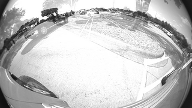

Introduction
This application shows how to write and run a C7x target kernel and integrate with OpenVX. The demo application adds two 8b grayscale image and write the output to another 8b grayscale image.
Supported plaforms
| Platform | Linux x86_64 | Linux+RTOS mode | QNX+RTOS mode | SoC |
| Support | YES | YES | YES | J721e / J721S2 / J784S4 |
Data flow
Steps to run the application on J7 EVM (Linux + RTOS mode)
- Build the application and related libraries as mentioned in Build Instructions for Linux+RTOS mode
- A sample "app_c7x.cfg" for C7x Kernel Application is provided under "/opt/vision_apps/" on the rootfs partition. Update paths and other fields if necessary.
- Run the app as shown below
cd /opt/vision_apps
source ./vision_apps_init.sh
./run_app_c7x.sh
- Output will be generated as "output_file" specified in app_c7x.cfg file
- View the output image in any image viewer
Steps to run the application on J7 EVM (QNX + RTOS mode)
- Build the application and related libraries as mentioned in Build Instructions for QNX+RTOS mode
- A sample "app_c7x.cfg" for C7x Kernel Application is provided under "/ti_fs/vision_apps/" on the boot partition. Update paths and other fields if necessary.
- Run the app as shown below
cd /ti_fs/vision_apps
. ./vision_apps_init.sh
./run_app_c7x.sh
- Output will be generated as "output_file" specified in app_c7x.cfg file
- View the output image in any image viewer
Steps to run the application on PC Linux x86_64
- Build the application and related libraries as mentioned in Build Instructions for PC emulation mode
- A sample "app.cfg" for C7x Kernel Application is provided under "${PSDKR_PATH}/vision_apps/apps/basic_demos/app_c7x_kernel/config" folder.Update paths and other fields if necessary.
- Run the app as shown below
cd ${PSDKR_PATH}/vision_apps/out/PC/x86_64/LINUX/$PROFILE/
./vx_app_c7x_kernel --cfg ${PSDKR_PATH}/vision_apps/apps/basic_demos/app_c7x_kernel/config/app.cfg
- Output will be generated as "output_file" specified in app.cfg file
- View the output image in any image viewer
Sample Output
Shown below is a example input and its corresponding output
|
|
|

Output = Input 1 + Input 2 |


 1.8.14
1.8.14